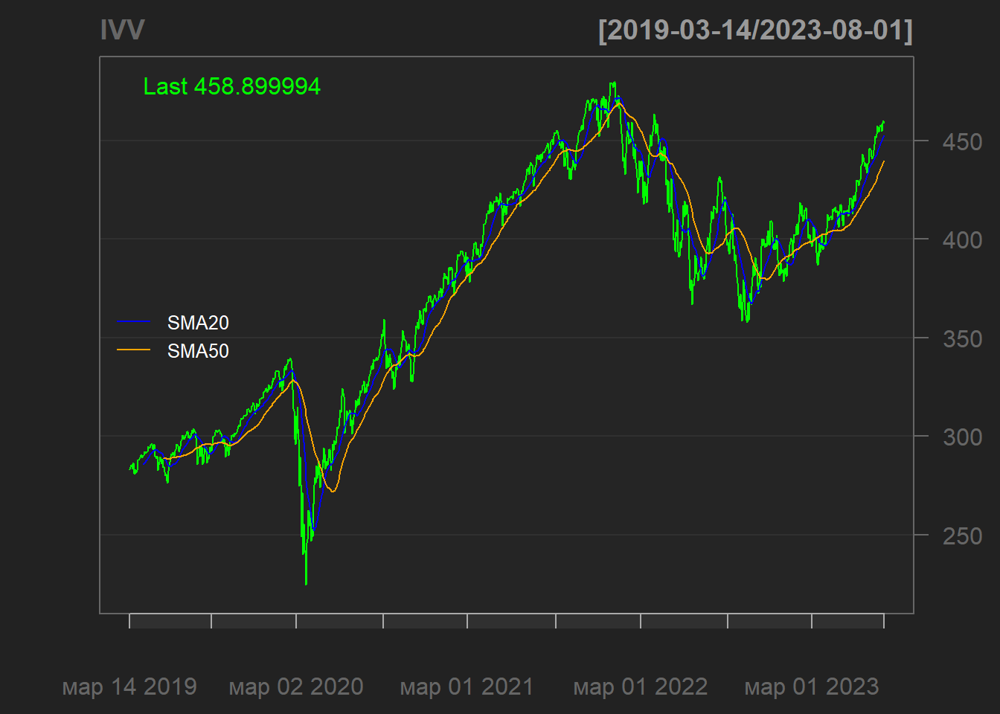
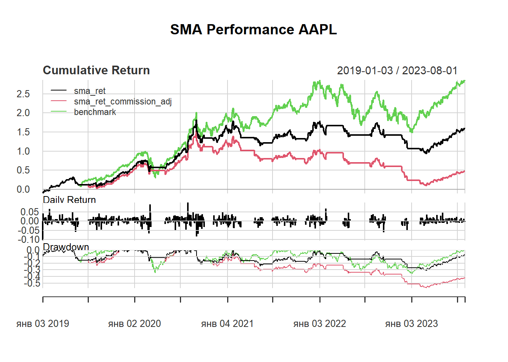
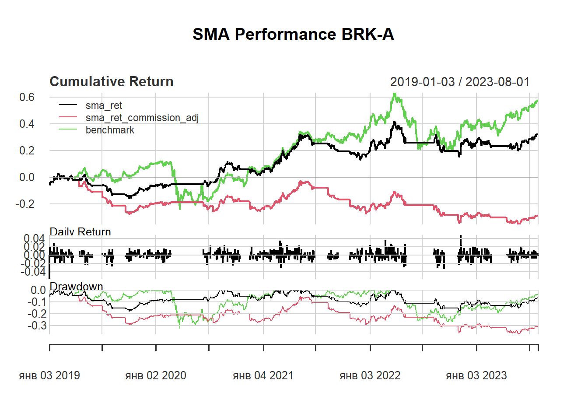

library(quantmod)
library(ggplot2)
library(PerformanceAnalytics)
load("./data/description.rdata")Results
PercentChange <- Max <- Min <- numeric()
for (st in 1:length(STOCKS)) { # st = 1
STOCKS[[st]]$Avg = (STOCKS[[st]][, 1] + STOCKS[[st]][, 4])/2
PercentChange[st] <- with(as.data.frame(STOCKS[[st]]),
(Avg[length(Avg)] - Avg[1])*100/Avg[1])
Max[st] = max(STOCKS[[st]][, 2])
Min[st] = min(STOCKS[[st]][, 3])
}
names(PercentChange) <- names(Max) <- names(Min) <- tickers# barplot(PercentChange, las = 1)
ggplot(data.frame(PercentChange), aes(x = tickers, y = PercentChange)) +
geom_bar(stat = "identity") +
xlab("") +
geom_text(aes(label = round(PercentChange, 1)),
color = "white",
size = 5,
position = position_stack(vjust = 0.5)) +
theme_light()ggplot(data.frame(Max), aes(x = tickers, y = Max)) +
geom_bar(stat = "identity") +
xlab("") +
geom_text(aes(label = round(Max, 1)),
color = "white",
size = 5,
position = position_stack(vjust = 0.5)) +
theme_light() +
scale_y_continuous(trans='log2')ggplot(data.frame(Min), aes(x = tickers, y = Min)) +
geom_bar(stat = "identity") +
xlab("") +
geom_text(aes(label = round(Min, 1)),
color = "white",
size = 5,
position = position_stack(vjust = 0.5)) +
theme_light() +
scale_y_continuous(trans='log10')for (st in 1:length(STOCKS)) { # st = 1
STOCKS[[st]]$sma20 = SMA(STOCKS[[st]][, 4], n = 20)
STOCKS[[st]]$sma50 = SMA(STOCKS[[st]][, 4], n = 50)
lineChart(STOCKS[[st]],
name = tickers[st],
TA = "addSMA(20, col = 'blue'); addSMA(50, col = 'orange')",
theme = chartTheme('black'))
legend('left', col = c('blue','orange'),
legend = c('SMA20','SMA50'), lty = 1, bty = 'n',
text.col = 'white', cex = 0.8)
}
for (st in 1:length(STOCKS)) { # st = 1
STOCKS[[st]]$sma20_ts <- Lag(
ifelse(Lag(Cl(STOCKS[[st]])) < Lag(STOCKS[[st]][, 8]) & Cl(STOCKS[[st]]) > STOCKS[[st]][, 8],1,
ifelse(Lag(Cl(STOCKS[[st]])) > Lag(STOCKS[[st]][, 8]) & Cl(STOCKS[[st]]) < STOCKS[[st]][, 8],-1,0)))
STOCKS[[st]]$sma20_ts[is.na(STOCKS[[st]]$sma20_ts)] <- 0
# SMA 50 Crossover Signal
STOCKS[[st]]$sma50_ts <- Lag(
ifelse(Lag(Cl(STOCKS[[st]])) < Lag(STOCKS[[st]][, 9]) & Cl(STOCKS[[st]]) > STOCKS[[st]][, 9],1,
ifelse(Lag(Cl(STOCKS[[st]])) > Lag(STOCKS[[st]][, 9]) & Cl(STOCKS[[st]]) < STOCKS[[st]][, 9],-1,0)))
STOCKS[[st]]$sma50_ts[is.na(STOCKS[[st]]$sma50_ts)] <- 0
# SMA 20 and SMA 50 Crossover Signal
STOCKS[[st]]$sma_ts <- Lag(
ifelse(Lag(STOCKS[[st]][, 8]) < Lag(STOCKS[[st]][, 9]) & STOCKS[[st]][, 8] > STOCKS[[st]][, 9],1,
ifelse(Lag(STOCKS[[st]][, 8]) > Lag(STOCKS[[st]][, 9]) & STOCKS[[st]][, 8] < STOCKS[[st]][, 9],-1,0)))
STOCKS[[st]]$sma_ts[is.na(STOCKS[[st]]$sma_ts)] <- 0
STOCKS[[st]]$sma_strat <- ifelse(STOCKS[[st]]$sma_ts > 1,0,1)
for (i in 1:length(Cl(STOCKS[[st]]))) {
STOCKS[[st]]$sma_strat[i] <- ifelse(STOCKS[[st]]$sma_ts[i] == 1,1,ifelse(STOCKS[[st]]$sma_ts[i] == -1,0,STOCKS[[st]]$sma_ts[i - 1]))
}
STOCKS[[st]]$sma_strat[is.na(STOCKS[[st]]$sma_strat)] <- 1
#sma_stratcomp <- cbind(sma20, sma50, sma_ts, sma_strat)
#colnames(sma_stratcomp) <- c('SMA(20)','SMA(50)','SMA SIGNAL','SMA POSITION')
STOCKS[[st]]$benchmark <- diff(log(Cl(STOCKS[[st]])))
STOCKS[[st]]$sma_ret <- STOCKS[[st]]$benchmark * STOCKS[[st]]$sma_strat
STOCKS[[st]]$sma_ret_commission_adj <- ifelse((STOCKS[[st]]$sma_ts == 1 | STOCKS[[st]]$sma_ts == -1) & STOCKS[[st]]$sma_strat != Lag(STOCKS[[st]]$sma_ts), (STOCKS[[st]]$benchmark - 0.05) * STOCKS[[st]]$sma_strat, STOCKS[[st]]$benchmark*STOCKS[[st]]$sma_strat)
#STOCKS[[st]]$sma_comp <- cbind(sma_ret, sma_ret_commission_adj, benchmark)
#colnames(sma_comp) <- c('SMA','SMA Commission Adj','Benchmark')
charts.PerformanceSummary(STOCKS[[st]][,c("sma_ret", "sma_ret_commission_adj", "benchmark")], main = 'SMA Performance')
print(table.AnnualizedReturns(STOCKS[[st]][,c("sma_ret", "sma_ret_commission_adj", "benchmark")]))
}
#> sma_ret sma_ret_commission_adj benchmark
#> Annualized Return 0.0047 -0.1128 0.3439
#> Annualized Std Dev 0.0652 0.1077 0.3318
#> Annualized Sharpe (Rf=0%) 0.0719 -1.0477 1.0364#> sma_ret sma_ret_commission_adj benchmark
#> Annualized Return 0.0051 -0.1020 0.1130
#> Annualized Std Dev 0.0341 0.0844 0.2212
#> Annualized Sharpe (Rf=0%) 0.1505 -1.2086 0.5110#> sma_ret sma_ret_commission_adj benchmark
#> Annualized Return 0.0645 -0.0798 -0.1735
#> Annualized Std Dev 0.0985 0.1261 0.4539
#> Annualized Sharpe (Rf=0%) 0.6555 -0.6327 -0.3821
#> sma_ret sma_ret_commission_adj benchmark
#> Annualized Return -0.0010 -0.1272 0.1043
#> Annualized Std Dev 0.0216 0.0862 0.2180
#> Annualized Sharpe (Rf=0%) -0.0443 -1.4761 0.4785STOCKS[[st]]$benchmark <- diff(log(Cl(STOCKS[[st]])))